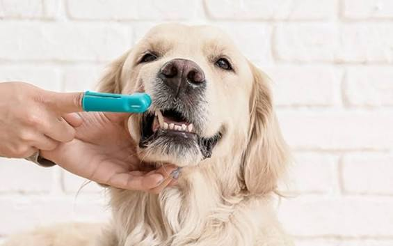
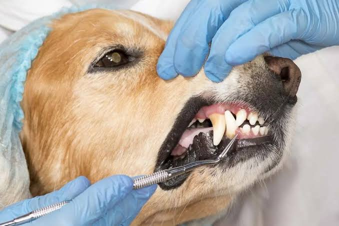

La importancia de la higiene dental en perros
Publicado por el Equipo Veterinario | Rancagua

¿Por qué es vital la salud oral de tu perro?
A menudo olvidamos que los dientes y encías de nuestras mascotas requieren la misma atención médica que la de los humanos. La acumulación de restos de comida genera placa bacteriana que, al endurecerse, se convierte en sarro. Si este no se trata a tiempo, causa gingivitis, retracción de encías y dolor intenso al comer.

Imagen detallada: Revisión dental en perro adulto.
Consecuencias en la salud general
Las bacterias acumuladas en la boca de tu perro no se quedan solamente allí. A través del torrente sanguíneo, pueden desplazarse hacia órganos vitales como el **corazón, el hígado y los riñones**, provocando patologías graves a largo plazo que disminuyen drásticamente su esperanza de vida.
Consejos de Prevención Diaria
- Cepillado regular: Utiliza siempre pasta de dientes formulada específicamente para perros (nunca pasta humana).
- Snacks y juguetes dentales: Ayudan a remover mecánicamente la placa más blanda.
- Revisiones periódicas: Trae a tu perro a **Veterinaria San Marcos** para una profilaxis ultrasónica cuando el dentista lo aconseje.
¿Notas mal aliento en tu mascota?
Agenda una evaluación dental hoy mismo con nuestros especialistas.
Reservar Cita Médica